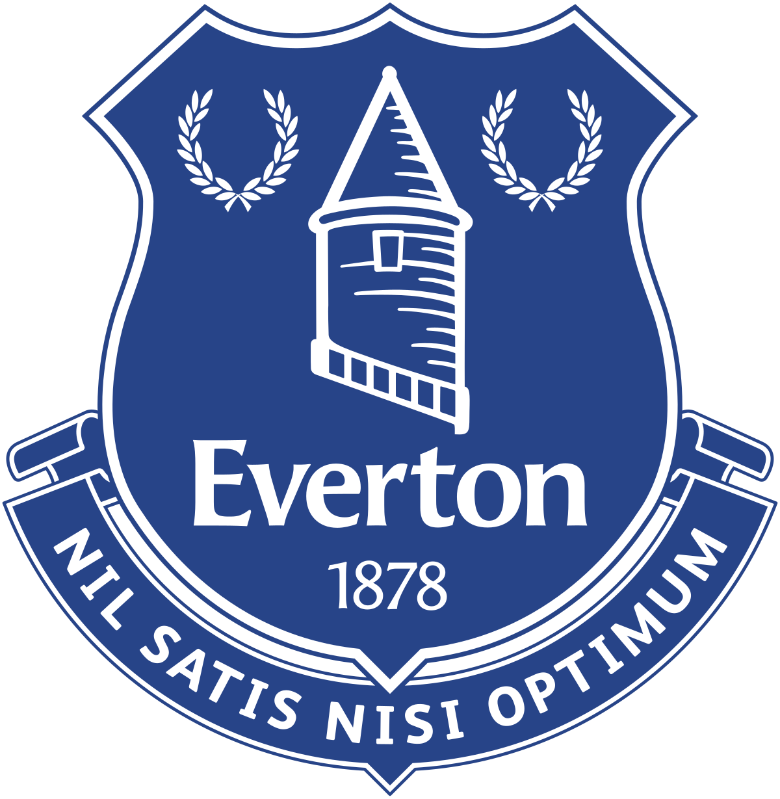
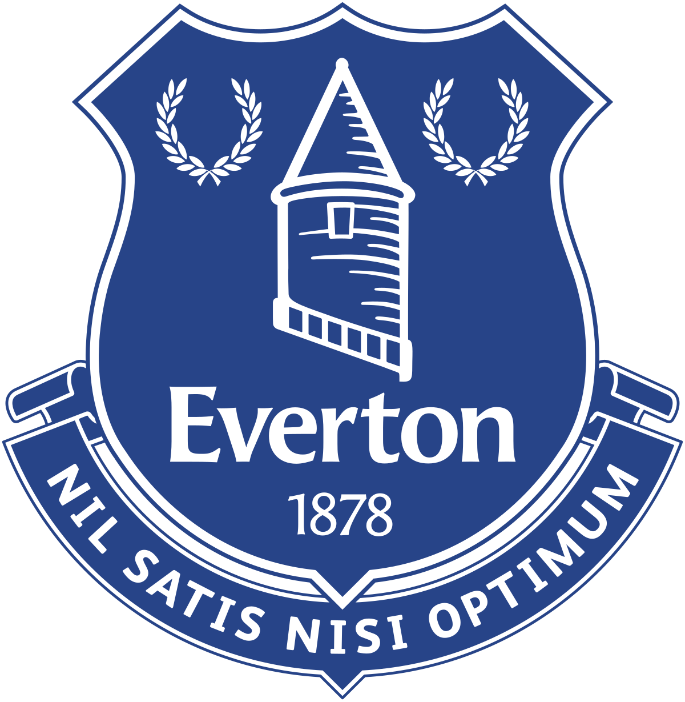

See the confirmed signings and outgoings at Premier League clubs
Find below all the signings and exits announced by Premier League clubs during the summer 2022 transfer window.
All clubs will be able to sign players who were out of contract during the window.
Summer Transfer Deadline Day - All the deals